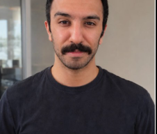
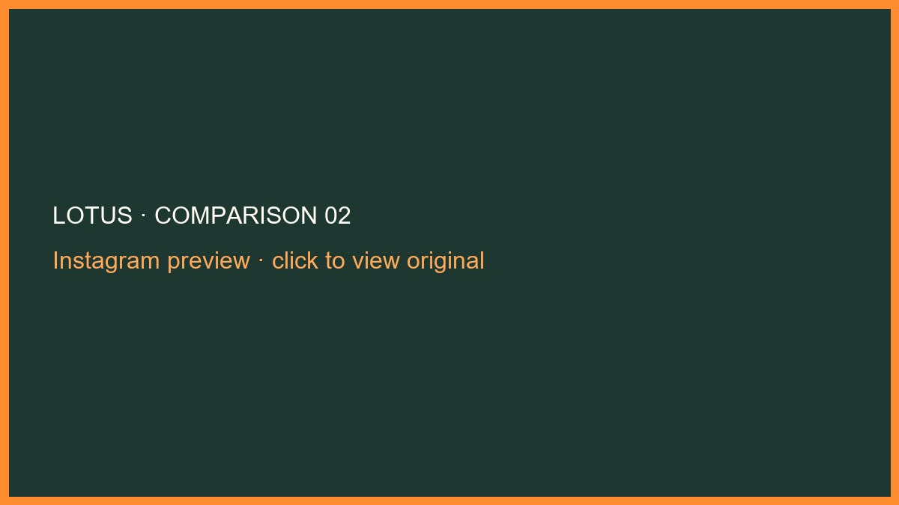

Oppogame
محتوای ویدیویی و رشد محصولOppogame
بازاریابی محصول و برنامهریزی و انتشار ویدیو.
پروداکت مارکتینگتولید ویدیویوتیوب
دیدن نمونهکارها ←روی مارکتینگ، محتوا و تولید ویدیو کار میکنم. اینجا چند نمونه از پروژههایی را گذاشتهام که در آنها نقش داشتهام.

از تولید محتوای آموزشی شروع کردم؛ بعد به اجرای کمپین، مدیریت محتوا و کار با تیمهای محصول و مارکتینگ رسیدم. بیشتر کارهایم بین برنامهریزی و اجرا بوده است.
اول مسئله و مخاطب را مشخص میکنم، بعد برای اجرا برنامه میچینم و نتیجه را بررسی میکنم.
بازاریابی محصول و برنامهریزی و انتشار ویدیو.
مدیریت کمپین، تولید محتوا و توسعه مخاطب شبکههای اجتماعی.
تولید محتوای آموزشی و اداره یک رسانه مستقل.
همراه تیم از شروع شکلگیری برند و مارکتینگ؛ فعالیت در محتوا، تبلیغات و تحقیق و توسعه کیف پول.
برای هر پروژه، نمونه خروجی و توضیح کوتاهی از کاری که انجام دادهام گذاشتهام.
در تیم Oppogame روی بازاریابی محصول و تولید و انتشار ویدیو کار کردم. طبق اطلاعات رزومه، محصول در ماه اول به یک میلیون کاربر رسید و مجموعه ویدیوهای یوتیوب ۴.۳ میلیون بازدید داشت. این اعداد نتیجه کار تیم و محصولاند.
نقشهای ثبتشده: مارکتینگ، تولید ویدیو، مدیریت شبکههای اجتماعی و مشارکت در توسعه محصول.
در Bitimen روی کمپینها، مدیریت شبکههای اجتماعی و تولید ویدیو کار کردم. بخشی از آمار دوره همکاری و تصاویر داشبورد را اینجا گذاشتهام.
دو تصویر از آمار صفحه در دوره همکاری؛ لینک پست مربوط هم کنارشان است.
تصاویر ثبتشده از Instagram Insights · برای دیدن پست مرتبط روی تصویر بزنید.
ساخت رسانه آموزشی و تحلیلی، تولید بیش از ۲۰۰ محتوای آموزشی، رشد ارگانیک تا ۵۰ هزار دنبالکننده و مدیریت تیم سهنفره.
چند پست از مجموعه مقایسه صرافیها را در ادامه میبینید.
مشاهده پیج Chartlotus ↗نمونه محتوا · سری مقایسه صرافیها


در نزدیک به سه سال همکاری با مجموعه، از مراحل اولیه شکلگیری تیم مارکتینگ و برند FOUR در کنار تیم بودم. در تحقیق و توسعه کیف پول مشارکت داشتم و در بخش شبکههای اجتماعی، مدیریت محتوا، تبلیغات و اینفلوئنسر مارکتینگ کار کردم. بخشی از تولیدات تصویری و ویدیویی را هم با استفاده از ابزارهای AI پیش بردم.
نقش من: دستیار مارکتینگ، کارشناس شبکههای اجتماعی، مدیریت محتوا و تبلیغات، اینفلوئنسر مارکتینگ و مشارکت در تحقیق و توسعه محصول.
نمونههایی از کارهای منتشرشده


همکاری در شکلگیری تیم مارکتینگ و برند، تحقیق و توسعه کیف پول FOUR، مدیریت محتوا، شبکههای اجتماعی، تبلیغات و اینفلوئنسر مارکتینگ؛ بازاریابی محصول Oppogame.
طراحی و اجرای کمپینهای دیجیتال و رشد مخاطب.
ساخت رسانه مستقل، تولید محتوا و مدیریت تیم.
برنامهریزی، جایگاهیابی برند و تحلیل مخاطب
ایده، تقویم، سناریو و هدایت اجرا
طراحی کمپین، شبکههای اجتماعی و ارزیابی نتایج
هماهنگی نقشها و هدایت تولید
تولید ویدیو و تصویر
ایجنتها و گردشکارهای هوشمند